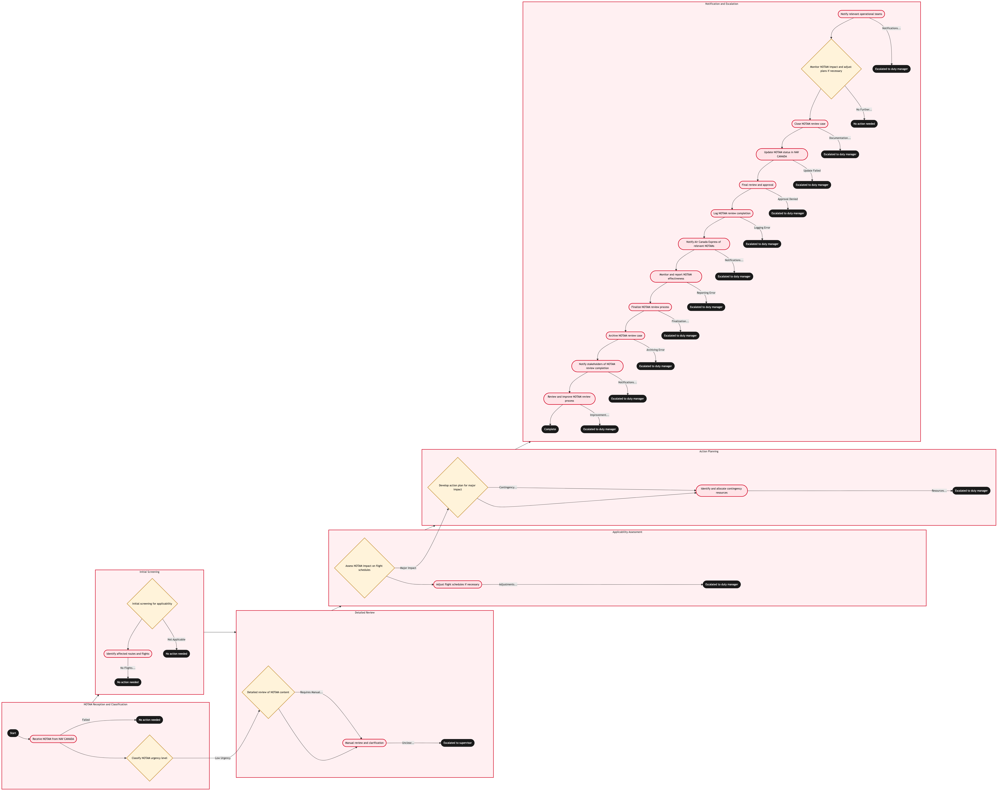

Updated 2026-08-21
NOTAM Review and Applicability Screening
Process flow
Click to zoom

Process steps
▼
Phase 1 — NOTAM Reception and Classification
2 steps
| Step | Activity | Role | System | Input | Output | KPI | Dec | Exc | Pain point |
|---|---|---|---|---|---|---|---|---|---|
| 1.1 | Receive NOTAM from NAV CANADA | YYZ Operations Control Duty Manager | NAV CANADAB | NOTAM data | NOTAM record in NetLine/Ops | Time to receive and log NOTAM within 5 minutes | N | Y | Delays in receiving NOTAMs due to NAV CANADA system outages. |
| 1.2 | Classify NOTAM urgency level | YYZ Operations Control Duty Manager | NetLine/OpsB | NOTAM record | Urgency classification (High, Medium, Low) | 100% accurate urgency classification within 2 minutes | Y | N | Inconsistent classification leading to delayed responses. |
▼
Phase 2 — Initial Screening
2 steps
| Step | Activity | Role | System | Input | Output | KPI | Dec | Exc | Pain point |
|---|---|---|---|---|---|---|---|---|---|
| 2.1 | Initial screening for applicability | YYZ Operations Control Duty Manager | NetLine/OpsB | Urgency classification | Applicability assessment (Yes/No) | 95% accuracy in initial screening within 1 minute | Y | N | False positives increasing operational overhead. |
| 2.2 | Identify affected routes and flights | YYZ Operations Control Duty Manager | NetLine/OpsB | Applicability assessment | List of affected routes and flight numbers | 100% accurate route identification within 2 minutes | N | Y | Inaccurate route identification leading to missed disruptions. |
▼
Phase 3 — Detailed Review
2 steps
| Step | Activity | Role | System | Input | Output | KPI | Dec | Exc | Pain point |
|---|---|---|---|---|---|---|---|---|---|
| 3.1 | Detailed review of NOTAM content | YYZ Operations Control Duty Manager | Jeppesen OCCB | Affected routes and flight numbers | Detailed analysis report | 90% complete detailed review within 5 minutes | Y | N | Complex NOTAMs requiring manual interpretation. |
| 3.2 | Manual review and clarification | YYZ Operations Control Duty Manager | NetLine/OpsB | Detailed analysis report | Clarified NOTAM interpretation | 100% accurate manual review within 10 minutes | N | Y | Manual reviews are time-consuming and error-prone. |
▼
Phase 4 — Applicability Assessment
2 steps
| Step | Activity | Role | System | Input | Output | KPI | Dec | Exc | Pain point |
|---|---|---|---|---|---|---|---|---|---|
| 4.1 | Assess NOTAM impact on flight schedules | YYZ Operations Control Duty Manager | NetLine/OpsB | Clarified NOTAM interpretation | Impact assessment (Minor, Major) | 98% accurate impact assessment within 3 minutes | Y | N | Overlooking significant impacts due to incomplete assessments. |
| 4.2 | Adjust flight schedules if necessary | YYZ Operations Control Duty Manager | NetLine/OpsB | Impact assessment | Updated flight schedule | 100% accurate schedule adjustments within 5 minutes | N | Y | Inconsistent schedule adjustments leading to operational chaos. |
▼
Phase 5 — Action Planning
2 steps
| Step | Activity | Role | System | Input | Output | KPI | Dec | Exc | Pain point |
|---|---|---|---|---|---|---|---|---|---|
| 5.1 | Develop action plan for major impact | YYZ Operations Control Duty Manager | NetLine/OpsB | Updated flight schedule | Action plan with contingencies | 90% complete action plan within 10 minutes | Y | N | Incomplete action plans leading to prolonged disruptions. |
| 5.2 | Identify and allocate contingency resources | YYZ Operations Control Duty Manager | NetLine/OpsB | Action plan with contingencies | Allocated contingency resources (crew, aircraft) | 100% accurate resource allocation within 5 minutes | N | Y | Resource allocation delays causing further disruptions. |
▼
Phase 6 — Notification and Escalation
12 steps
| Step | Activity | Role | System | Input | Output | KPI | Dec | Exc | Pain point |
|---|---|---|---|---|---|---|---|---|---|
| 6.1 | Notify relevant operational teams | YYZ Operations Control Duty Manager | NetLine/OpsB | Action plan with contingencies | Notifications sent to operational teams | 95% successful notifications within 2 minutes | N | Y | Notification failures leading to operational confusion. |
| 6.2 | Monitor NOTAM impact and adjust plans if necessary | YYZ Operations Control Duty Manager | NetLine/OpsB | Operational feedback | Adjusted action plan | 100% accurate plan adjustments within 5 minutes | Y | N | Inflexible plans leading to prolonged disruptions. |
| 6.3 | Close NOTAM review case | YYZ Operations Control Duty Manager | NetLine/OpsB | Final action plan | Closed NOTAM review case | 100% closed cases within 5 minutes | N | Y | Delayed closure due to incomplete documentation. |
| 6.4 | Update NOTAM status in NAV CANADA | YYZ Operations Control Duty Manager | NAV CANADAB | Final action plan | Updated NOTAM status | 95% successful updates within 2 minutes | N | Y | Failed updates causing discrepancies in external systems. |
| 6.5 | Final review and approval | YYZ Operations Control Duty Manager | NetLine/OpsB | Updated NOTAM status | Approved final NOTAM review case | 100% approved cases within 5 minutes | N | Y | Approval delays leading to prolonged disruptions. |
| 6.6 | Log NOTAM review completion | YYZ Operations Control Duty Manager | NetLine/OpsB | Approved final NOTAM review case | Logged completion record | 100% logged completions within 5 minutes | N | Y | Logging errors causing incomplete records. |
| 6.7 | Notify Air Canada Express of relevant NOTAMs | YYZ Operations Control Duty Manager | NetLine/OpsB | Relevant NOTAMs | Notifications sent to Air Canada Express | 100% successful notifications within 2 minutes | N | Y | Notification failures leading to operational confusion for Air Canada Express. |
| 6.8 | Monitor and report NOTAM effectiveness | YYZ Operations Control Duty Manager | NetLine/OpsB | Operational feedback | Effectiveness report | 100% accurate reports within 5 minutes | N | Y | Inaccurate reports leading to misinformed decision-making. |
| 6.9 | Finalize NOTAM review process | YYZ Operations Control Duty Manager | NetLine/OpsB | Effectiveness report | Finalized NOTAM review case | 100% finalized cases within 5 minutes | N | Y | Finalization delays causing prolonged disruptions. |
| 6.10 | Archive NOTAM review case | YYZ Operations Control Duty Manager | NetLine/OpsB | Finalized NOTAM review case | Archived NOTAM review case | 100% archived cases within 5 minutes | N | Y | Archiving errors causing data loss. |
| 6.11 | Notify stakeholders of NOTAM review completion | YYZ Operations Control Duty Manager | NetLine/OpsB | Archived NOTAM review case | Notifications sent to stakeholders | 100% successful notifications within 2 minutes | N | Y | Notification failures leading to operational confusion among stakeholders. |
| 6.12 | Review and improve NOTAM review process | YYZ Operations Control Duty Manager | NetLine/OpsB | Operational feedback | Process improvement plan | 90% completed improvements within 1 week | N | Y | Inflexible processes leading to prolonged disruptions. |
Swim lanes
YYZ Operations Control Duty Manager1.1 1.2 2.1 2.2 3.1 3.2 4.1 4.2 5.1 5.2 6.1 6.2 6.3 6.4 6.5 6.6 6.7 6.8 6.9 6.10 6.11 6.12
Systems touched
NAV CANADABNetLine/OpsBJeppesen OCCB
Key performance indicators
- 95% successful NOTAM reception and logging within 5 minutes
- 100% accurate urgency classification within 2 minutes
- 95% accurate initial screening within 1 minute
- 90% complete detailed review within 5 minutes
- 100% accurate schedule adjustments within 5 minutes
Risks and control points
- Delays in receiving NOTAMs due to NAV CANADA system outages.
- Inconsistent classification leading to delayed responses.
- Complex NOTAMs requiring manual interpretation.
- Manual reviews are time-consuming and error-prone.
- Overlooking significant impacts due to incomplete assessments.
Air Canada Process Wiki — process and systems reference compiled from public sources
for IT Application Management and User Support pre-sales discovery.
Built 2026-08-21. Every system carries an evidence tier: tier C is an industry pattern and tier U is an open
question, and neither should be asserted as fact about Air Canada without confirmation in discovery.
Not affiliated with or endorsed by Air Canada. Air Canada, Aeroplan and Altitude are trademarks of Air Canada.